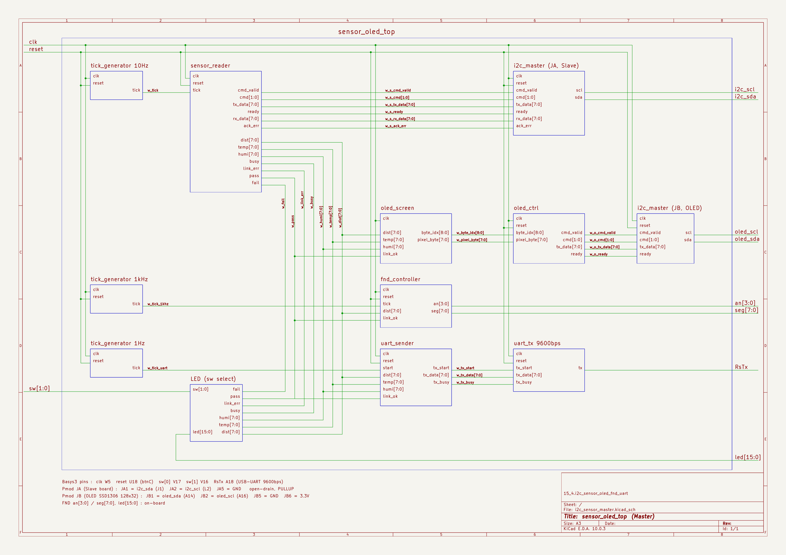
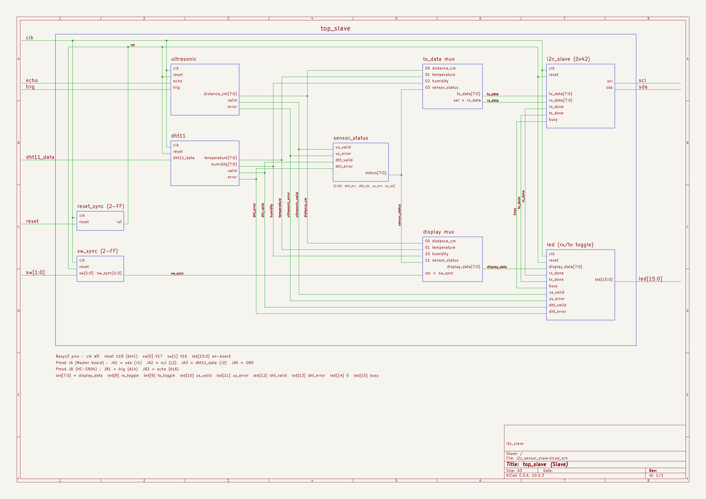
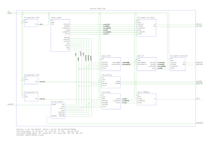
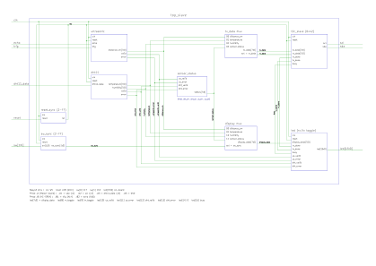

2026.11 · 팀 2인
FPGA I²C 센서 드라이버
Basys3 보드 두 개를 I²C로 연결한 센서 데이터 송수신 RTL 설계
1. 프로젝트 개요
- 프로젝트명
- FPGA I²C 센서 드라이버
- 수행기간
- 2026.11
- 수행인원
- 2인 (Master 1, Slave 1)
- 담당역할
- Master 보드 RTL 설계
- 사용 기술
- Verilog, Vivado, Basys3, HC-SR04, DHT11, SSD1306 OLED
2. 개발 배경 및 목적
- 교육 과정 FPGA 팀 과제
- I²C 프로토콜의 RTL 구현 및 보드 간 통신 학습
3. 개발 목표
- Slave 보드의 거리·온습도 측정값을 Master 보드가 I²C로 읽기
- FND, UART, OLED로 측정값 표시
4. 시스템 구성
- Slave: HC-SR04 거리, DHT11 온습도를 주기적으로 측정해 레지스터에 저장 (0x00 거리, 0x01 온도, 0x02 습도)
- Master: I²C(100kHz)로 Slave 레지스터를 하나씩 읽어 출력
- 보드 간 연결: JA1 SDA, JA2 SCL, 공통 GND, SDA/SCL 풀업 저항




5. 주요 구현 내용 (Master)
- I²C 레지스터 선택 후 1바이트 단위 읽기
- FND에 거리 표시
- UART와 SSD1306 OLED에 거리·온도·습도 표시
- 0.1초마다 Slave(주소 0x42)의 세 레지스터를 다시 읽어 표시 갱신
- OLED: 주소 0x3C, 초기화 시 차지펌프 명령(8Dh, 14h) 포함, 텍스트 버퍼를 수정하면 화면 전체를 다시 그리는 방식
- 디버그용 LED 표시: 수신값, NACK 발생(배선·주소 오류), PASS / FAIL
6. 문제 해결
6.1 거리 표시 이상
- 문제
- FND·OLED의 초음파 센서(HC-SR04) 거리 값 표시 이상
- 원인 확인
- Slave 응답은 레지스터당 1바이트인데 Master가 2바이트를 읽음
- 해결
- Master 읽기 길이를 1바이트로 맞춤 (1바이트 수신 후 NACK, STOP)
6.2 통신 끊김 직후 잘못된 값 표시
- 문제
- 보드 간 연결이 끊긴 직후 잘못된 값 표시
- 원인 확인
- 연결이 끊기면 Slave의 ACK 응답이 없어 NACK 발생, 이때 수신값은 0xFF(SDA가 풀업으로 High 유지) 또는 0x00이지만 성공 여부 확인 없이 그대로 저장해 표시
- 해결
- STOP 완료 후 전송 오류(NACK, 버스 멈춤)를 확인해 성공한 경우에만 저장, 오류 시 출력은 대시(-)로 표시
7. 결과
- 보드 간 I²C 통신으로 센서 값 수신 및 3종 출력 장치 표시 시연